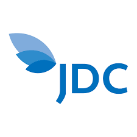
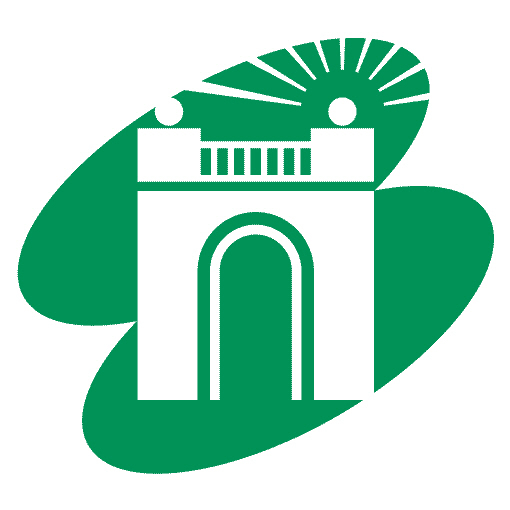
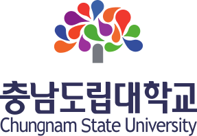

CUBIG과 함께한 공공·금융·국방·교육 기관

제주국제자유도시개발센터
서대문구도시관리공단
충남도립대학교 SK텔레콤
SK텔레콤 교보
교보 대한민국 육군
대한민국 육군 대한민국 공군
대한민국 공군 국가데이터처
국가데이터처 IBK
IBK 우리은행
우리은행 국가유산청
국가유산청 이화여대 목동병원
이화여대 목동병원 아마존 AWS
아마존 AWS NVIDIA
NVIDIA Gartner
Gartner 네이버 클라우드
네이버 클라우드제주국제자유도시개발센터
서대문구도시관리공단
충남도립대학교
SK텔레콤교보대한민국 육군대한민국 공군국가데이터처IBK우리은행국가유산청이화여대 목동병원아마존 AWSNVIDIAGartner네이버 클라우드